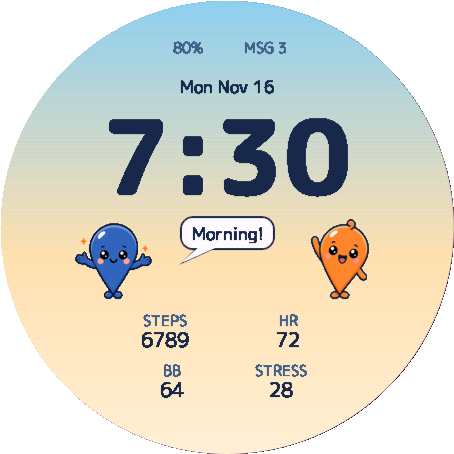
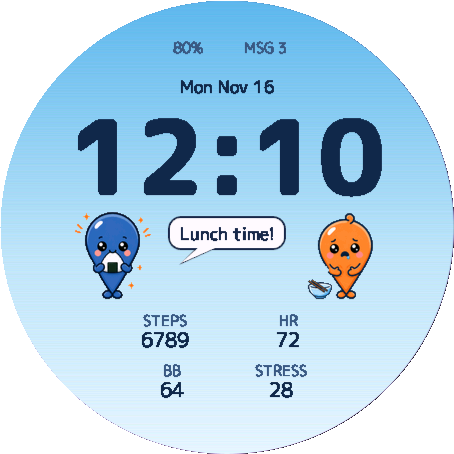
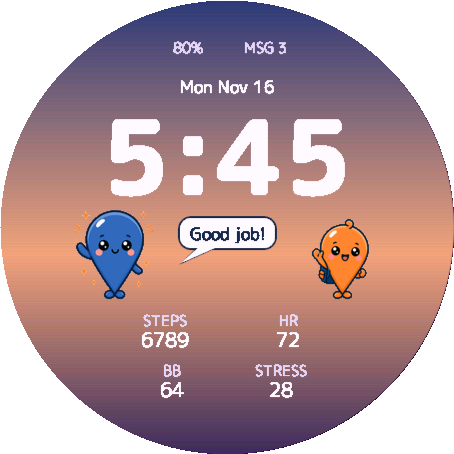
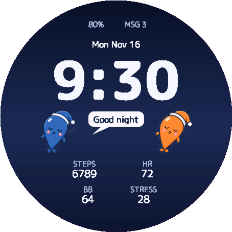
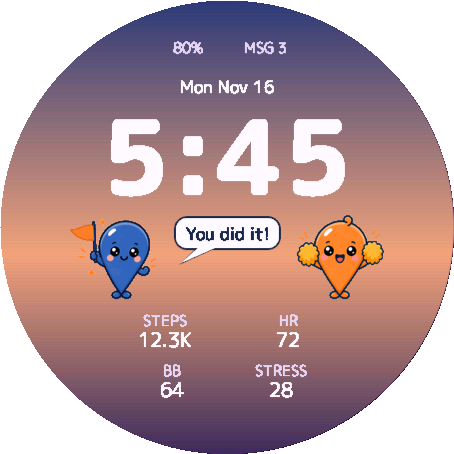

Sai 与 Jino｜随时段变换的、适用于Garmin的可爱角色数字表盘
Sai and Jino（Sai 与 Jino）是一款适用于 Garmin 的数字表盘，主角是 SIGN 的地图图钉造型双胞胎角色：蓝色的 Sai 和橙色的 Jino。两人站在时间下方，陪你度过一整天。天空的颜色、两人的图案和对话气泡，会在早上・中午・傍晚・夜晚变换。
要点：一天中有4个场景，达到步数目标时会换成庆祝的图案，并可在4个数据栏中显示步数、心率等。这是一款付费表盘，安装后24小时内可免费试用全部功能。
适合哪些人？
- 使用支持的 Garmin 手表、想要有图案的明亮表盘而不只是数字的人
- 已经通过 LINE 贴图认识 Sai 与 Jino 的人
- 想在表盘上看到自己达到步数目标的人
- 也想在表盘上显示心率、步数等数据的人
一天中变换的4个场景
| 场景 | 时间 | 天空 | 对话气泡 |
|---|---|---|---|
| 早上 | 5:00-10:59 | 从浅蓝渐变为柔和朝霞橙 | 「Morning!」 |
| 中午 | 11:00-15:59 | 蓝天 | 「Lunch time!」 |
| 傍晚 | 16:00-18:59 | 深蓝、橙与紫的晚霞 | 「Good job!」 |
| 夜晚 | 19:00-4:59 | 深蓝色 | 「Good night」 |
- 当天的步数达到步数目标时，两人会换成庆祝的图案，并说「You did it!」。夜间即使达到目标，也仍保持睡觉的图案。
- 图案会随场景变换，但没有动画。
- 手表语言设为日文时，对话气泡以日文显示，其他语言则以英文显示。





※ 图片为模拟器（Venu 3）的画面，手表语言为英文时的显示。数据栏的数值仅为示例。
※ 图标和表盘的图案，是以 AI（Canva 的 AI）生成的图片为基础制作的。
表盘上显示的内容
| 项目 | 内容 |
|---|---|
| 时间 | 大号数字时间（12 小时制或 24 小时制，跟随手表设置） |
| 日期 | 日期与星期 |
| 上方 | 手表电量（%）与通知数量（小字） |
| 4个数据栏（两排） | 可选择步数、心率、身体能量指标（BB）、压力、消耗卡路里、距离（km 或 mi，跟随手表的单位设置）、爬升楼层、运动时间（本周）、秒数或不显示。较大的步数与卡路里会缩短显示（例如 12.3K）；无法获取数值时显示「--」 |
设置
- 交换 Sai 和 Jino 的左右位置
- 对话气泡（显示 / 不显示）
- 数据栏 1-4（左上、右上、左下、右下）。默认：步数、心率、BB、压力
息屏显示
- 在低功耗状态（息屏显示）下，只以灰字黑底显示时间和上排的2个数据栏，不显示图案、天空与对话气泡。
- 为了降低 AMOLED 烧屏的风险，显示位置每分钟会移动几个像素。在此状态下，秒数栏显示「--」。
适配机型
支持49款圆形AMOLED屏幕的Garmin手表：Forerunner 70／165・165 Music／170・170 Music／265・265S／570（42・47mm）／965／970、Venu 2・2 Plus・2S／Venu 3・3S／Venu 4（41・45mm）、vívoactive 5・6、fēnix 8 AMOLED（43・47・51mm）／fēnix 8 Pro（47・51mm）／fēnix E／fēnix 9（43・47mm）／fēnix 9 Pro（43・47・51mm）、epix (Gen 2)／epix Pro (Gen 2)（42・47・51mm）、Instinct 3 AMOLED（45・50mm）、MARQ (Gen 2)、Approach S50／S70（42・47mm）／S72（43・47mm）、Descent G2／Mk3（43・51mm）、D2 Air X10／Mach 1／Mach 2／Mach 2 Pro（包括tactix 8、quatix 8等相同平台的机型）
其他机型与其他产品的适配情况，请见Garmin适配机型一览。
语言
- 表盘显示语言为日文和英文。手表语言设为日文时，日期、对话气泡与标签以日文显示，其他语言则以英文显示。
- 手表上的购买说明不支持中文，以英文显示。
价格与购买方法
付费（一次性买断）表盘。安装后24小时内，所有功能均可免费试用。没有月费等持续扣费。价格请以 Connect IQ 商店页面为准。
购买方法（3个步骤）：
- 试用结束后，表盘会显示二维码和6位数代码。
- 用手机扫描二维码（或打开 www.kzl.io/code 并输入代码），再通过 KiezelPay 一次性付款（银行卡或 PayPal）。
- 表盘会自动解锁（可能需要几分钟）。同一个 Garmin 账户中的其他支持的手表无需再次购买。
付款由第三方服务 KiezelPay 处理，而非 Garmin。
手表上的画面，以及付款后未解锁时的处理方法，请见Garmin 付费表盘的购买方法。
常见问题
Q. Sai 与 Jino 可以免费使用吗？
A. 这是一款付费（一次性买断）表盘。安装后24小时内可免费试用全部功能。试用结束后，购买一次即可使用全部功能，没有月费等持续扣费。
Q. 在哪里付款？
A. 付款由第三方服务 KiezelPay 处理，而非 Garmin。试用结束后表盘会显示二维码和购买代码，请用手机扫描二维码，或用手机或电脑打开 www.kzl.io/code 并输入代码付款。
Q. 角色会动吗？
A. 不会。图案会在早上・中午・傍晚・夜晚以及达到步数目标时变换。
Q. 夜间达到步数目标会怎样？
A. 夜间（19:00-4:59）即使达到目标，也仍保持睡觉的图案和「Good night」。
Q. 可以交换 Sai 和 Jino 的位置吗？
A. 可以在设置中交换，也可以关闭对话气泡。
Q. 在另一块 Garmin 手表上需要再买一次吗？
A. 同一个 Garmin 账户中的其他支持的手表无需再次购买。
关于 Sai 与 Jino
Sai 与 Jino 是 SIGN 的地图图钉造型双胞胎角色。名字来自把品牌名称「SIGN」一分为二的 SI 和 GN。认识 Sai 与 Jino ・ 查看 LINE 贴图
Garmin、Connect IQ、fēnix、Forerunner、Venu 等是 Garmin Ltd. 或其子公司的商标。本页介绍的产品由 SIGN（佐藤雄一）制作，并非 Garmin 制作的产品。